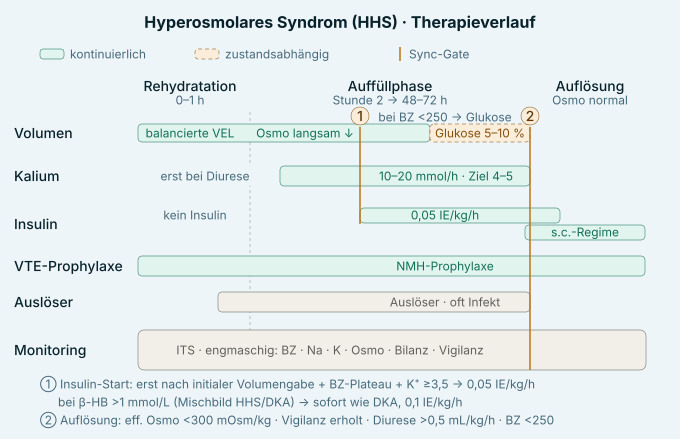

Diagnose — 4 Kriterien
Plasmaglukose ≥600 mg/dL, effektive Serumosmolalität >300 (bzw. totale >320) mOsm/kg, β-HB <3,0 mmol/L (Ketone negativ/gering), pH ≥7,3 und Bikarbonat ≥15 mmol/L. Vigilanzminderung ist kein Diagnosekriterium mehr. Höhere Letalität als DKA.
Formeln
eff. Osmolalität = 2 × Na + Glukose/18 (mg/dL); korrigiertes Na +1,6 (bis +2,4) mmol/L pro 100 mg/dL BZ über 100.
Volumen
Balancierte VEL, 500–1000 mL/h in den ersten 2–4 h, danach nach Hämodynamik, Bilanz und Natrium; kleinere Boli (250 mL) bei Älteren/Herz-/Niereninsuffizienz. Korrekturtempo: BZ-Abfall ≤90–120 mg/dL/h, Natrium ≤10 mmol/L/24 h, Osmolalität 3–8 mOsm/kg/h. 0,45 % NaCl nur erwägen, wenn Osmo trotz adäquater positiver Bilanz nicht fällt. Glukose 5–10 % ergänzen, sobald BZ <250 mg/dL.
Kalium — Messung bei Aufnahme, 2 h nach Insulinstart, dann 4-stündlich · Ziel 4–5
- >5,0 → keine Gabe
- 3,5–5,0 → substituieren (10–20 mmol/h)
- <3,5 → Beginn mit 10 mmol/h und Insulin zurückhalten, bis K⁺ >3,5
- Erst bei ausreichender Diurese (AKI häufig!). AMBOSS nennt obere Schwelle >5,5; eine DDG-Praxisempfehlung mit niedrigerer Schwelle (>4,5) ließ sich nicht belegen — vor dem Lernen am DDG-Primärdokument prüfen.
Insulin
Zunächst kein Insulin bei β-HB <1 mmol/L (Volumen senkt BZ allein); Start 0,05 IE/kg/h als Festrate, wenn BZ trotz Flüssigkeit nicht weiter fällt und K⁺ ≥3,5. Bei Mischbild (Hyperosmolalität mit signifikanter Ketonämie/Azidose) wie DKA behandeln, Festrate 0,1 IE/kg/h. Vorbestehendes Basalinsulin fortführen.
VTE-Prophylaxe
NMH-Standardprophylaxe (hohes Thromboserisiko: hyperosmolar, oft ältere, immobile Patienten), sofern keine Kontraindikation.
Monitoring
ITS; BZ, Kreatinin, Elektrolyte und Serumosmolalität 4-stündlich; Bilanz/Diurese; neurologischer Status engmaschig.
Auslöser
Häufig Infekt; auch MI, Schlaganfall, neue Medikation, mangelnde Flüssigkeitszufuhr; HHS oft Erstmanifestation eines Typ-2-Diabetes.
Komplikationen
Zu rasche Osmo-/Na-Korrektur → Hirnödem bzw. osmotische Demyelinisierung; Thrombosen/Embolien; Hypoglykämie/Hypokaliämie bei zu forschem Insulin; Komplikationen des Auslösers.
Auflösung
eff. Osmolalität <300 mOsm/kg (normalisiert) · Vigilanz/Kognition erholt · Diurese >0,5 mL/kg/h · BZ <250. Danach strukturiertes s.c.-Insulinregime (Basalinsulin 1–2 h vor Stopp der Infusion, geschätzte Tagesdosis 0,3–0,6 IE/kg); orale Antidiabetika individuell nach Nierenfunktion und Auslöser prüfen.